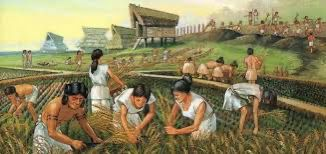

History of agriculture in Egypt
After the July Revolution of 1952 in Egypt led by Gamal Abdel Nasser and
the Free Officers, the revolution put some of its six principles into practice,
including the establishment of a sound democratic life, social justice,
and a strong national army. In order to achieve the principle of social justice,
the Agrarian Reform Law was issued early on September 9,
1952 - during the reign of President Muhammad Naguib
and Gamal Abdel Nasser applied it.
The law provides for determining the agricultural ownership of individuals,
taking the land from the big owners and distributing it to the small landless peasants.
Successive amendments were issued that determined individual and family ownership,
ranging from 200 acres to fifty acres for the old owners.
The Egyptians were associated with the Nile River since ancient times,
and Egypt and its civilization were associated with agriculture,
and the ancient Egyptians invented agricultural machines and irrigation machines.
The pharaohs were the owners of the oldest school of irrigation in history,
as they established basin irrigation rules on precise engineering foundations,
and they built dams, cut canals, and set up some irrigation networks to distribute
and store water, and established standards to determine the height of the Nile water
and estimate taxes on its basis, and they used very accurate mathematical rules,
and thus it was Agricultural activity is credited with
the progress of the ancient Egyptians in astronomy, arithmetic, statistics and surveying.
Agricultural activity continued to form the basis of civilization and
economy throughout successive historical eras. In the era of the Ptolemies,
the area of agricultural lands expanded and the cultivated crops varied.
The Ptolemaic kings took care of irrigation affairs, regulating the use of water,
digging canals and canals, building bridges and digging wells in the desert.
In the Islamic era, Egypt also made continuous progress in the field of agriculture.
Land was reclaimed, and interest in grain cultivation continued.
Rice and maize cultivation were introduced, and legumes
and cotton cultivation flourished in Egypt. Since the July Revolution of 1952 until now,
interest in the agricultural sector has continued
and work is being done to develop this important sector.

Next